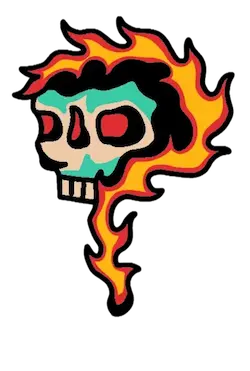
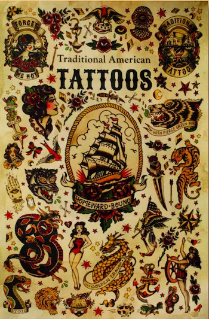
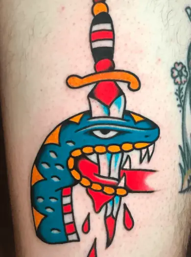
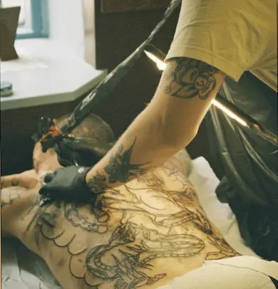
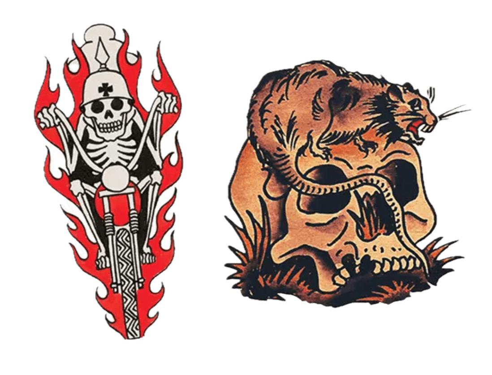
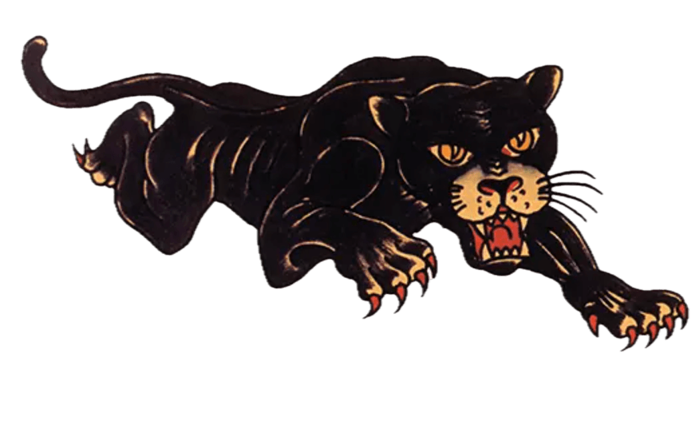
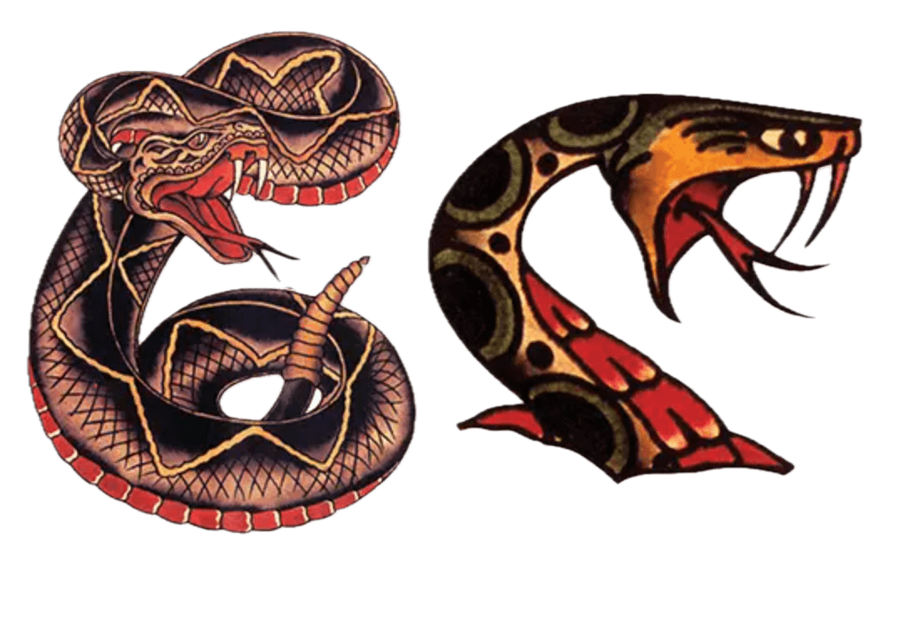
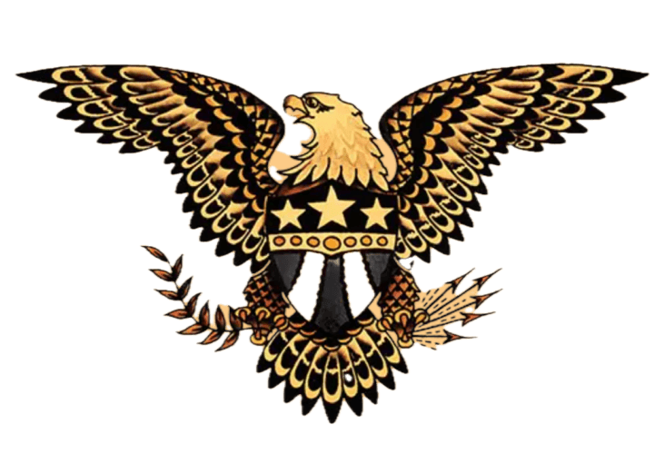
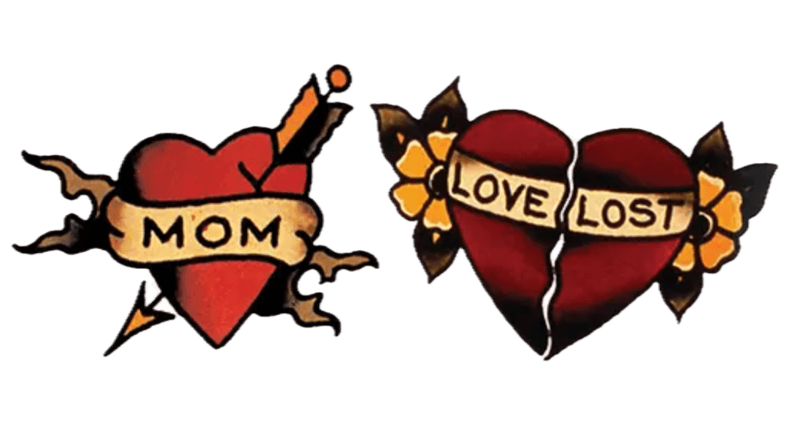

OM STILEN
Hvad er Old School tatovering?

Old School, også kendt som American Traditional er den klassiske, vestlige tatoveringsstil, som
opstod og blev populariseret i første halvdel af 1900-tallet.
Stilen blev for alvor støbt af
ikoniske tatovører som Sailor Jerry (Norman Collins), Bert Grimm og Lyle Tuttle, og den har sine
dybe rødder i sømandskulturen, militæret og det amerikanske arbejdermiljø.
Old School
udmærker
sig
ved sin umiddelbare, tidløse og ikoniske udstråling. Det er en stil, der kan genkendes på meters
afstand, og som hylder håndværket og historien bag tatoveringskulturen.
Key features aka det visuelle udtryk
Old School er bygget op omkring regelæringen "Bold Will Hold" : En filosofi om, at
tatoveringen skal
være simpel og robust nok til at se skarp ud hele livet.
Fede, sorte konturer (Bold Outlines): Alt
indrammes af markante, tykke og knivskarpe sorte streger. Det giver motivet sin ikoniske grafiske
styrke og sikrer, at farverne ikke "flyder ud" med tiden.
Mættede grundfarver: Farvepaletten er
bevidst begrænset. Man bruger primært stærke, rene grundfarver: Rød, gul, grøn og mørkeblå/sort. Der
er næsten ingen brug af pastel-, lilla- eller lysebrune nuancer.
3D-effekt via rå skyggelægning:
Skygger laves med en markant overgang fra ren sort, over i en blød, prikket graduering (whip
shading), og direkte ud til den bare hud eller en stærk grundfarve.

Begynder guide
Hvis du er ny i verdenen af tatoveringer (eller blot ny inden for denne stil), er der et par ting, der er godt at vide, inden du sætter dig i stolen
Tidløst design:
Modsat mange følsomme og finlivede mønstre holder de tykke streger og stærke primærfarver (rød, gul, grøn, sort) sig utroligt godt i huden over tid.
Byg din egen samling:
Old School-motiver fungerer fantastisk som enkelte, stærke elementer (kaldet flash), som du med tiden kan samle på og opbygge til en hel arm eller et ben.
Gode råd før din første tur i stolen
Spis et solidt måltid: Dit blodsukker skal være højt! Det hjælper din krop med at håndtere adrenalinen og mindsker risikoen for at blive svimmel.
Drik masser af vand: Hydreret hud er nemmere at tatovere og heler hurtigere.
Få en god nats søvn: Mangel på søvn gør din smertetærskel lavere.
Undgå alkohol: Alkohol tynder dit blod ud, hvilket gør det sværere for tatovøren at arbejde og for pigmentet at sætte sig.
Smertekort

De "nemme" steder (Mild til moderat smerte):
Ydersiden af overarmen / skulderen,
underarmen
(ydersiden), låret (forsiden og ydersiden), læggen.
Mellemniveauet (Noget der kan mærkes):
Indersiden af overarmen, brystet, ryggen.
Zonerne for de hærdede (Høj
smerte):
Ribben og mave, knæ,
albuer og skinneben (alt tæt på knogle og led), hænder, fødder og hals.
Symbolik

Kranie
En tatovering er en af de få helt uigenkaldelige beslutninger, vi tager i livet. Et tilsagn, du bærer med dig til din dødsdag. Det er én af grundene til, at dødningehoveder og dødstemaer fylder så meget i traditionel tatovering. En anden grund er, at tatoveringer, både i oldtiden og på Sailor Jerrys tid, ofte var kendetegnet for krigere, lejesoldater og eventyrere.
Panter
Panteren er et klassisk symbol på styrke, snilde og frygtløshed inden for traditionel tatovering. Den står ofte knivskarpt med et aggressivt udtryk.


Slange
Slangen symboliserer genfødsel, visdom og beskyttelse. I Old School-stilen ses slanger ofte snoet om dolke eller andre motiver med et stærkt grafisk udtryk.
Ørn
Ørnen repræsenterer frihed, styrke og det amerikanske land. Den ses ofte i dynamiske positioner med udspilede vinger.


Sacred heart
Det hellige hjerte symboliserer dyb hengivenhed, lidenskab og udholdenhed gennem svære tider, ofte illustreret med flmer og en strålende krans.